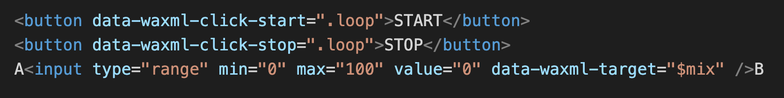

This demo illustrates how to play two looped sounds and mix between them using WebAudioXML - an XML based language to implement interactive audio into a web page.
Open the audio.xml file to se the audio configuration.
The connections from HTML to let the buttons and slider control WebAudioXML is using the data-waxml attributes:
 AB